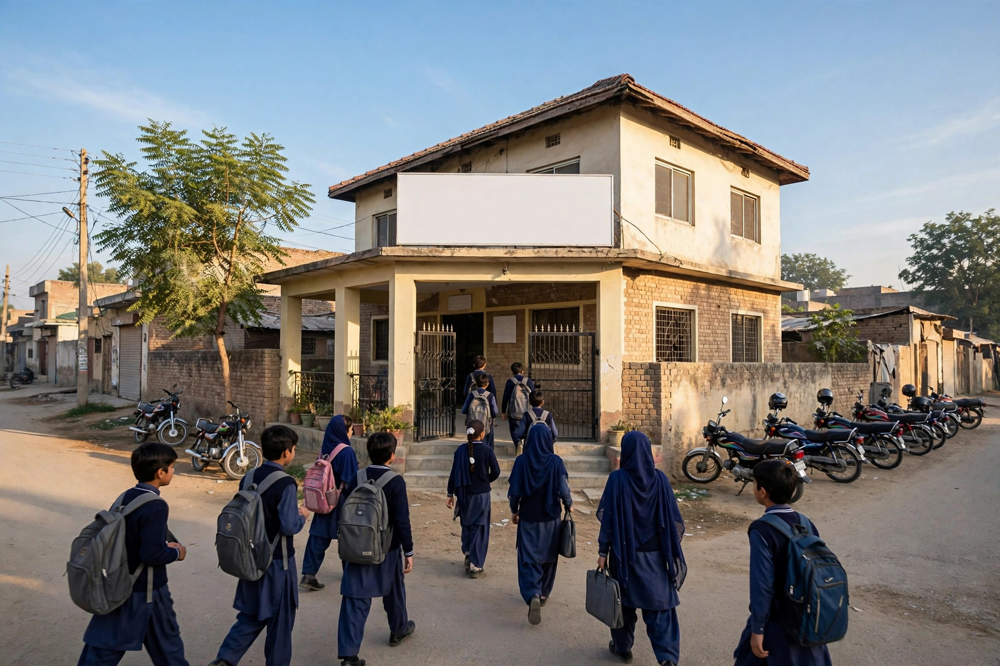

Every year, families in Mianwali face the same questions at admission time. Which academy is strong for science subjects? Which college suits a daughter or son after matric? Which tuition centre has evening classes that fit around school? Increasingly, those questions are typed into Google first, and the institutions that answer them clearly online receive the visits and enquiries.
Mianwali has a lively education scene, with academies, colleges and tuition centres competing for many of the same students. Word of mouth still matters greatly, but it now works alongside search. A parent may hear a name from a neighbour, then check that name on Google before deciding to visit. If what they find is thin, outdated or hard to read, confidence drops before you ever meet them.
Prepare Long Before Admission Season Opens
The most common mistake is starting SEO when admissions are already open. Search engines need time to find and understand new pages, and families start researching earlier than many institutions expect. Build and improve your pages while the academic year is running normally: course pages, timings, profile details and answers to common parent questions.
Think of the work in layers. First, make sure you can be found correctly at all, with an accurate Google profile and a working website. Second, explain what you teach and for whom. Third, add helpful guidance that shows how you think about learning, such as how a student should prepare for a new session or choose between subject combinations.

Give Every Main Course or Class Its Own Clear Page
Do not squeeze everything onto one page. A parent looking for evening tuition for a specific class has different questions from a student choosing a college programme. Separate pages let each audience find its answer quickly, and they match search behaviour far better.
- State which classes, subjects or programmes the page covers.
- Give class timings, session start information and location clearly.
- Explain how enquiries and visits work, with a phone number.
- Introduce the teaching approach in plain, honest words.
Avoid copying another institution wording. Write about your own teachers, your own timetable and your own way of supporting students. Genuine detail is what families remember, and it is also what makes a page worth finding in search.
Answer Parents Real Questions as Content
Parents ask similar questions every season: how big classes are, how progress is reported, how tests are handled, and what happens if a student joins late. Turn those questions into short articles and clear sections on your site. Our piece on how Mianwali customers phrase searches can help any local institution hear the language families actually use.
Keep claims careful. Do not promise top positions or guaranteed examination outcomes. You can describe your teaching honestly, mention subjects you focus on, and explain the support students receive. Families trust measured language, especially when a decision affects a child future.
Make Enquiries Effortless on a Phone
Most parents will find you on a mobile phone, often in the evening. Your site should load quickly, show the phone number as a tappable button, and make visiting hours and directions easy to find. Your Google profile should carry the same timings and number, so a family does not receive two different answers from two places.
For the full picture of support available, see our SEO services in Mianwali page. One point must be plain: Zaheer Seo Expert is based in Layyah and has no office in Mianwali. We serve Mianwali institutions from Layyah, working online and by phone, which is practical for SEO because pages, profiles and reports are all handled digitally.
Use the Quiet Months to Build Trust
Between admission seasons, keep the presence alive. Update photos of the building and classrooms, post genuine news such as a new session starting, reply to reviews from families politely, and refresh any page whose timings or courses have changed. A neglected profile with last year dates tells parents a story you do not want told.
Also make sure former and current students can speak well of you in the places parents look. A polite request for an honest review after a good result or a helpful term, with a calm reply from the institution, adds the kind of reassurance that advertising cannot buy and that families actively search for before visiting.
Academies and colleges in Mianwali win students through teaching and reputation. SEO simply makes sure that reputation is visible at the moment a family is choosing where to look first. Prepare early, write honestly, and keep every detail current.
Frequently Asked Questions
When should an academy in Mianwali start SEO for admissions?
Start well before admission season, not during it. Course pages, profile details and helpful articles need time to be indexed and found, so prepare them while classes are running normally.
What pages does a tuition centre need first?
Begin with a clear home page, one page for each main class or subject group, timings and location, and an enquiry page with phone and visiting hours. Add teacher introductions and study guidance after the basics are solid.
Can an academy promise top positions or guaranteed results?
No. Present your teaching, subjects and support honestly and let parents judge. Guaranteed results claims damage trust and can mislead families, so avoid them in SEO content and everywhere else.
Where does Zaheer Seo Expert work from for Mianwali colleges?
Zaheer Seo Expert is based in Layyah and has no office in Mianwali. SEO work for Mianwali academies and colleges is done online and by phone from Layyah.
Want More Customers From Google?
Call 0327 7350830 or email seozaheer14@gmail.com. Zaheer Seo Expert, Layyah - Rajan Shah Road, Rana Nagar, Chak 116 TDA, Pakistan. Open 24 hours.
Get Your SEO Strategy →